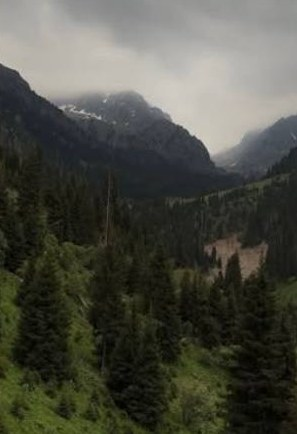
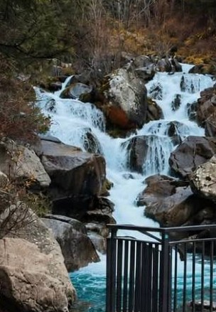
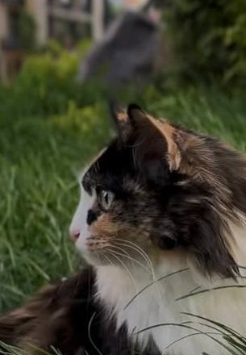
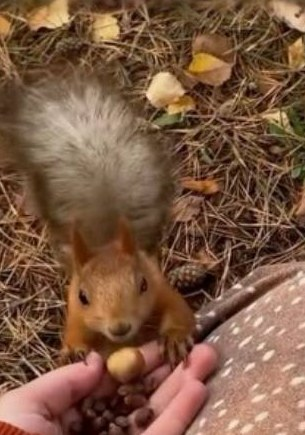

Почти три года продюсирую YouTube-шоу и подкаст «Ведьмин час»: придумываю темы, пишу сценарии, веду запись и звук, публикую и продвигаю выпуски, развиваю сообщество на Boosty.
Шоу и подкаст «Ведьмин час», декабрь 2023 — ноябрь 2026
просмотров на YouTube
4,9млн
за всё время, около 92 % из них — Shorts 2024 года
часов просмотра на YouTube
141,4тыс.
за всё время, YouTube Studio
уникальных слушателей на Яндекс Музыке
74,7тыс.
с запуска подкаста
выпусков в ленте подкаста
55
3 сезона, с декабря 2023 года
01Кейс
«Ведьмин час»
Независимое YouTube-шоу и подкаст о мире Гарри Поттера
«Ведьмин час» — независимое русскоязычное шоу, которое мы с соведущей Катей делаем с декабря 2023 года. Каждый выпуск — часовой разговор о героях, местах и явлениях волшебного мира, подготовленный по сценарию. Шоу выходит на YouTube, Яндекс Музыке, Apple Podcasts и других платформах через Mave, а вокруг него собралось сообщество в Telegram и на Boosty.
Кто что делает
Продюсирование, сценарии, исследование
Алиса
Ведущие
Алиса и Катя
Звук и аудиомонтаж
Алиса
Видеомонтаж
Алиса и Катя, вместе
Публикация, сообщество, Boosty
Алиса
Роль
Продюсер, сценарист и соведущая
Формат
Видеоподкаст с выпусками около часа, Shorts, квизы с гостями, стримы
Платформы
YouTube, Яндекс Музыка, Apple Podcasts, Mave, Telegram, Boosty
Период
Декабрь 2023 — сейчас
Команда
Два человека: я и соведущая Катя. Видео монтируем вместе
Объём
55 выпусков в ленте подкаста; на YouTube — 58 длинных видео, 13 Shorts и 12 стримов
Что я сделала и что из этого вышло
Shorts
Два коротких вопроса — больше двух третей всех просмотров канала
В июне–июле 2024 года мы с соведущей выпустили 11 Shorts — в основном ролики-вопросы о героях и мире книг. Ролик о том, почему Люпин ехал в Хогвартс на поезде (30 секунд), набрал 1,76 млн просмотров, ролик о Роне Уизли в фильмах (19 секунд) — 1,57 млн.
3,3млнпросмотров у двух роликов по 30 и 19 секунд
Все 13 Shorts канала — 4,55 млн просмотров, около 92 % всех просмотров на YouTube.
Источник: Публичные счётчики YouTube, 21 ноября 2026
После паузы в длинных выпусках на YouTube с апреля 2026 года мы вернулись 5 ноября часовым хэллоуинским выпуском «Вампиры против оборотней». За первые 14 дней он набрал 8,2 тыс. просмотров: лучший результат среди последних 10 видео канала за тот же срок. В Apple Podcasts за первые 15 дней его послушали 200 человек — на 77 % больше, чем медианный выпуск шоу к тому же дню после выхода.
Вампиры против оборотнейХэллоуинский выпуск5 ноября 2026 · 1:03:44 · 8,3 тыс. просмотров на 21 ноября 2026
+53 %времени просмотра — выше обычного для канала диапазона
+45 %прироста подписчиков (84 новых) — тоже выше обычного
Канал целиком: последние 28 дней (23 октября — 19 ноября 2026, выпуск вышел 5 ноября) к предыдущим 28 дням
Важно. В предыдущие 28 дней новых видео не было. Просмотры канала выросли на 65 %, но остались в обычном для него диапазоне (13,8–30,5 тыс. за 28 дней); выше этого диапазона оказались только время просмотра и прирост подписчиков.
Источник: YouTube Studio, 23 октября — 19 ноября 2026; Apple Podcasts Connect
Аудио
Главный выпуск 2025 года в Яндекс Музыке
Рождественский выпуск «Святочный бал» вышел 31 декабря 2024 года и за 2025 год собрал 18 407 прослушиваний на Яндекс Музыке. Всего в 2025 году подкаст на Яндекс Музыке послушали 30 581 человек, 28 484 из них — впервые.
18 407прослушиваний выпуска на Яндекс Музыке за 2025 год
В «Распаковке» Яндекс Музыки за 2025 год он отмечен как выпуск, который слушали и пересылали друзьям.
Святочный балРождественский выпуск о традиции Турнира Трёх Волшебников31 декабря 2024 · 47:32 · 4,5 тыс. просмотров на 21 ноября 2026
Сообщество
Платная подписка вокруг бесплатного шоу
С весны 2024 года веду Boosty: ранний доступ к выпускам, расширенные версии, эксклюзивные аудиовыпуски и закрытый чат. Анонсы и обсуждения идут в Telegram-канале.
58платных подписчиков на Boosty
3,09тыс.подписчиков в Telegram-канале
Источник: Кабинет Boosty и страница Telegram, ноябрь 2026
Как звучит шоу
Четыре фрагмента со звуком: как мы выбираем тему, работаем с источниками и находим свой угол в знакомой истории.
Почему мы вернулись именно с этой темой. Из выпуска «Вампиры против оборотней» · 0:41
В Apple Podcasts — 292 слушателя за первые 60 дней, на 85 % выше медианы шоу.
4 декабря 2025 · 1:01:376,1 тыс. просмотров
Сериал HBO о Гарри Поттере, часть 1Шоураннеры, съёмочная команда и подробности производства
Новостной выпуск с гостьей — автором тематического Telegram-канала.
Цифры по платформам
Цифры взяты из кабинетов платформ и не суммируются: у каждой своя методика подсчёта.
Цифра
Что это
Период и источник
4,9млн
YouTubeпросмотров за всё время, около 92 % — Shorts
YouTube Studio, 1 декабря 2023 — 19 ноября 2026
141,4тыс.
YouTubeчасов просмотра за всё время
YouTube Studio, 1 декабря 2023 — 19 ноября 2026
7 768
YouTubeподписчиков канала
YouTube Studio, на 19 ноября 2026
74,7тыс.
Яндекс Музыкауникальных слушателей с запуска
Аналитика Яндекс Музыки, с запуска по ноябрь 2026
338тыс.
Яндекс Музыкачасов прослушивания с запуска
Аналитика Яндекс Музыки, с запуска по ноябрь 2026
36 884
Maveуникальных слушателя RSS-ленты подкаста: Apple Podcasts и другие приложения (Яндекс Музыка считает отдельно)
Mave, всё время, декабрь 2023 — ноябрь 2026
Все цифры по платформам
YouTube
YouTube Studio и страница канала, на 19–21 ноября 2026
просмотров за всё время, около 92 % — Shorts
4,9млн
часов просмотра за всё время
141,4тыс.
подписчиков канала
7 768
просмотров у самого популярного длинного выпуска
20тыс.
Яндекс Музыка
Аналитика подкастов Яндекс Музыки, с запуска; «Распаковка 2025» — за 2025 год
стартов с запуска (любое включение выпуска)
1,2млн
прослушиваний дольше 2 минут с запуска
723,9тыс.
уникальных слушателей с запуска
74,7тыс.
часов прослушивания с запуска
338тыс.
выпуска слушают в среднем
48,5 %
слушатель в 2025 году, из них 28 484 — новые
30 581
минут прослушивания в 2025 году
7,46млн
Mave
Mave, всё время, декабрь 2023 — ноябрь 2026. Mave — RSS-хостинг подкаста (Apple Podcasts и другие приложения); Яндекс Музыка считает своих слушателей отдельно
прослушиваний RSS-ленты за всё время
79 937
уникальных слушателя RSS-ленты подкаста: Apple Podcasts и другие приложения (Яндекс Музыка считает отдельно)
36 884
Apple Podcasts
Apple Podcasts Connect, последние 60 дней, ноябрь 2026
подписчиков в Apple Podcasts
1,1тыс.
воспроизведений за последние 60 дней
9тыс.
больше слушателей, чем у медианного выпуска шоу к тому же дню после выхода, — у четырёх последних выпусков
+63–85 %
Boosty и Telegram
Кабинет Boosty и публичная страница Telegram · ноябрь 2026
платных подписчиков на Boosty
58
бесплатных подписчиков на Boosty
178
подписчиков в Telegram-канале
3,09тыс.
лайка у подкаста на Яндекс Музыке
5 523
Аудитория
Ядро аудитории — женщины 25–34 лет
42 % всего времени просмотра на YouTube
76 %
времени просмотра — женщины (53 % просмотров)
Источник: YouTube Studio, раздел «Аудитория», ноябрь 2026
48 %
месячной аудитории — новые зрители, 17 % — постоянные
57 %
просмотров — из функций выбора контента YouTube (главная страница, подписки)
Источник: YouTube Studio, последние 28 дней (23 октября — 19 ноября 2026)
Что пишут зрители
Комментарии на YouTube под выпуском «Вампиры против оборотней», ноябрь 2026. Имена скрыты, эмодзи убраны, пунктуация поправлена, сокращения отмечены «…».
…Вы не знаете, но вы составляете мне компанию, когда я прибираюсь, готовлю, работаю, гуляю, принимаю ванну…
зритель на YouTube
…Я нашла вас довольно поздно. Но переслушала все выпуски и подписалась на всех доступных платформах…
зритель на YouTube
Я бы с удовольствием смотрел видео и о других вселенных, очень интересно вас слушать… не обязательно оставаться в рамках вселенной ГП…
зритель на YouTube
02Процесс
Полный цикл: от идеи до публикации
Так устроен каждый выпуск шоу. Большую часть этапов я веду сама.
01Идея
02Исследование
03Концепция и сценарий
04Подготовка производства
05Люди и процессы
06Запись
07Монтаж и звук
08Публикация и продвижение
08 / 08
01
Идея
Выбираю тему и угол: героя, место или новость, которых хватит на час живого разговора.
Инструменты: NotionChatGPTClaude
02
Исследование
Собираю материал по книгам, фильмам и дополнительным источникам и проверяю факты.
Инструменты: PerplexityChatGPTNotion
03
Концепция и сценарий
Пишу сценарий по постоянной структуре: приветствие, вступление, анонс Boosty и Telegram, 4–6 тематических блоков, прощание.
Инструменты: Notion
04
Подготовка производства
Планирую запись, готовлю свет, микрофоны и звуковую карту.
Инструменты: Focusrite Scarlett Solo
05
Люди и процессы
Согласую график с соведущей и гостями, держу задачи, шаблоны и архив выпусков в одном рабочем пространстве.
Инструменты: NotionTelegram
06
Запись
Записываю выпуск в кадре как соведущая и одновременно слежу за картинкой и звуком.
Инструменты: iPhoneOBS Studio
07
Монтаж и звук
Чищу и свожу звук; видео монтируем вместе с соведущей; Shorts делаю я.
Помимо шоу я снимаю короткие спокойные видео: горы, вода, животные, предметы и детали повседневной жизни. Снимаю, монтирую и цветокорректирую сама. Снимаю и передаю готовые материалы, которые гостевой дом, отель или локальный бизнес использует так, как ему нужно.




Кадры из личных видео
Что могу сделать
Вертикальные ролики для Reels и Shorts
Атмосферная съёмка места и деталей
Предметная видеосъёмка
Монтаж и цветокоррекция под стиль бренда
UGC-ролики
Инструменты
iPhone, DaVinci Resolve, CapCut, Lightroom
05Навыки
Что я умею
Продюсирование
Концепции и форматы
Контент-план
Организация производства
Координация записи и гостей
Сроки и задачи
Анализ статистики
Сценарии и редактура
Исследование и фактчекинг
Сценарии длинных выпусков
Структура и драматургия
Идеи и тексты для Shorts
Заголовки и описания
Посты для Telegram
Видео и звук
Запись видеоподкаста
Запись и обработка звука
Аудиомонтаж подкастов
Видеомонтаж
Shorts и Reels
Съёмка на iPhone
Базовая постановка света
Цветокоррекция
YouTube и подкасты
Ведение YouTube-канала
Дистрибуция подкаста
Превью и обложки
Аналитика YouTube Studio
Аналитика Яндекс Музыки и Apple Podcasts
Сообщество и монетизация
Ведение Telegram-канала
Платная подписка на Boosty
Закрытый чат для подписчиков
Общение с аудиторией
Общение с рекламодателями
Программы
DaVinci Resolve
монтаж и цветокоррекция
CapCut
короткие видео
OBS Studio
запись и стримы
REAPER
запись, монтаж и сведение звука
Studio One
запись звука
Adobe Photoshop
превью и графика
Adobe Lightroom
обработка фото
Notion
сценарии и производство
AI-инструменты
ChatGPT
исследование, идеи, черновики текстов
Claude
структура и редактура текстов
Perplexity
поиск источников и фактчекинг
Использую AI для исследования, идей и черновых визуалов; итоговый текст и решения — мои.
Оборудование
Звуковая карта Focusrite Scarlett Solo
Микрофоны и запись звука
iPhone для съёмки
06Обо мне
Кто я и что ищу
Открыта к ролямYouTube-продюсер, креативный продюсер, контент-продюсер. Также SMM, сценарная работа, видеосъёмка и UGC, аудиомонтаж подкастов.
Я креативный продюсер. С декабря 2023 года вместе с соведущей Катей делаю «Ведьмин час» — независимое шоу о мире Гарри Поттера на YouTube и в подкаст-сервисах. Отвечаю за идеи, сценарии, запись и звук, публикацию и сообщество, а видео мы монтируем вдвоём. Теперь хочу делать такую же работу в команде: на YouTube-канале, в подкасте или в контент-студии.